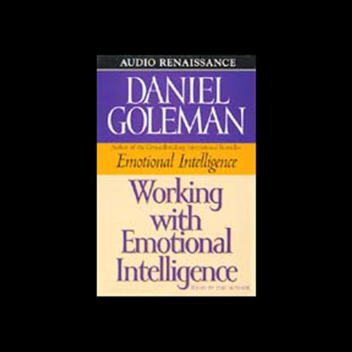

Library › Psychology & People
Emotional Intelligence — Summary & Key Lessons

Why it can matter more than IQ — the book that named the skill set your report card never graded.
📖 OPEN THE FULL INTERACTIVE BREAKDOWN →🌐 Read it in Hindi, Hinglish, Gujarati, Tamil & 22 more languages — free, with audio.
💡 The Big Idea
Goleman's synthesis put a name on the operating system beneath success: EMOTIONAL INTELLIGENCE — five domains: knowing your emotions (self-awareness), managing them (self-regulation), motivating yourself (delay of gratification, optimism, flow), recognizing emotions in others (empathy), and handling relationships (social skill). The neuroscience spine: the amygdala can HIJACK the thinking brain (faster circuitry, evolutionarily older — the rage or panic that acts before reason arrives), and emotional life is largely the negotiation between limbic impulse and prefrontal management. His claims that reorganized education and management: IQ predicts perhaps 20% of life outcomes (the rest is 'other forces' — character, luck, and substantially EQ); childhood emotional lessons wire the circuits (but plasticity never closes); and emotional illiteracy's bills — depression, aggression, failed marriages, derailed careers — are largely preventable curricula we simply never taught.
🧠 The 4 Key Lessons
Lesson 1: The Amygdala Hijack: Why You Act Before You Think
Part 1: The Emotional Brain
The anatomy that explains every regretted outburst: sensory signals reach the AMYGDALA — the brain's emotional sentinel — via a fast pathway BEFORE the neocortex finishes its slower, fuller analysis; when the amygdala pattern-matches threat (often sloppily — it files by crude association, especially childhood-era files), it can seize control of the whole brain: the HIJACK — flooding you with the neurochemistry of rage or panic while the thinking brain is still buffering. Goleman's crucial details: hijacks feel absolutely justified DURING (the chemistry curates the evidence), the flooding takes ~20+ minutes to metabolize (arguing before the tide recedes is arguing with chemistry), and the prefrontal cortex CAN dampen the circuit — that dampening being, neurologically, what self-regulation IS: a muscle of circuitry built by use. The practical liberation: the gap between trigger and response is biological real estate — and every technique in the book is a way of buying more of it.
📖 Example: Goleman's case files: the man who capsized... rather, his signature examples run from the tragic (the father who shot his own daughter hiding in a closet as a prank-gone-wrong — the hijack's split-second, pattern-matched 'intruder' verdict outrunning every… Read the full example →
⚡ Do this: Learn your hijack signature: list your last three disproportionate reactions — the trigger, the body's first signal (heat, jaw, chest), the story you told during. Then install the circuit-breaker: at the body signal, name it ('flooding') and take the 20-minute break BEFORE responding. The naming itself recruits the prefrontal brake.
Lesson 2: Self-Awareness & Self-Regulation: The Master Aptitudes' Foundation
Part 2: Know Thyself / Passion's Slaves
Domain one, SELF-AWARENESS — 'knowing a feeling AS IT HAPPENS' — is the keystone: without the observing ear, emotions run the show invisibly (Goleman's taxonomy: the ENGULFED, swamped and mercurial; the ACCEPTING, aware but passive; and the SELF-AWARE, whose mindfulness of moods becomes the platform for managing them). The practice is naming with granularity: 'irritated-because-dismissed' is manageable; 'bad mood' is weather. Domain two, SELF-REGULATION, is not suppression (bottling backfires — the suppressed leaks and the body bills) nor venting (catharsis research convicts it: rehearsing rage GROWS it) but tempering: reframing the trigger (anger runs on the internal narration — rewrite the story, drain the anger), distraction and environment-shifts for the flood tide, worry-scheduling for anxiety's loops, and mood-repair as a learnable kit. Goleman's framing: the goal is the Aristotelian mean — 'anyone can become angry, that is easy; but to be angry with the right person, to the right degree, at the right time' — emotion as information and energy, mastered rather than muted.
📖 Example: The venting demolition is the section's most useful surprise: studies where hitting pillows and 'letting it out' reliably INCREASED subsequent aggression — the catharsis folk-theory running exactly backwards, because each rehearsal deepens the neural groove.… Read the full example →
⚡ Do this: Build granularity: for one week, name your emotional state in two-plus specific words, three times daily (calendar prompts). Kill one venting habit (the rant-text, the rage-replay) and replace it with the reframe question: 'what story am I telling, and what's one alternative?' Keep the mood-repair kit written and visible: your three proven shifters.
Lesson 3: Motivation & the Marshmallow: Impulse Delay, Optimism, Flow
Part 2: The Master Aptitude
Domain three — self-motivation — rests on three researched pillars. IMPULSE DELAY: Mischel's marshmallow studies (four-year-olds who could wait for the second treat tracked, years later, as more competent by nearly every measure — with the crucial modern footnote Goleman anticipates: the capacity is TRAINABLE strategy, not fixed destiny — the successful delayers used techniques: looking away, self-distraction, reframing the treat). OPTIMISM as explanatory style (Seligman): the optimist reads setbacks as temporary-specific-changeable and therefore persists; the pessimist's permanent-personal-pervasive reading quits — with the insurance-sales data showing learned optimism out-predicting aptitude tests. And FLOW (Csikszentmihalyi): the state of total absorption — challenge matched to skill, self-consciousness dissolved — as motivation's summit: 'emotional intelligence in its highest form'; people whose work regularly reaches flow outperform and outlast the merely disciplined, because the state itself is the reward. The composite: hope, in Goleman's operational definition — believing you have both the will and the ways — is the master motivator, and each component is a curriculum.
📖 Example: The marshmallow tape's details carry the lesson: the successful four-year-old delayers covered their eyes, sang, invented games — TECHNIQUE, visible at age four, teachable at any age; the impulsive grabbers, followed into adolescence, showed the costs across… Read the full example →
⚡ Do this: Train the delay muscle: pick one daily impulse (the phone-grab, the snack, the reply) and insert a ten-minute strategic delay — using the four-year-olds' toolkit: distract, reframe, distance. Audit your setback-explanations against the three P's, and engineer one flow session weekly: clear goal, matched challenge, zero interruptions — motivation's renewable source.
Lesson 4: Empathy & Social Skill: The People Domains That Decide Careers
Part 2–3: The Roots of Empathy / The Social Arts / Applied EQ
Domain four, EMPATHY, is built on a perceptual skill: reading the NONVERBAL channel (tone, gesture, micro-expression — where feelings actually broadcast, since 'people's emotions are rarely put into words'); Rosenthal's PONS research found nonverbal-reading ability tracking success across domains, independent of IQ — and empathy's developmental root (attunement in infancy) explains both its power and its trainable gaps. Domain five, SOCIAL SKILL, is empathy operationalized: emotional contagion management (moods spread; the socially skilled SET the room's tone rather than catching it), conflict handling, and the organizing talents of leadership. Goleman's applied chapters cash the checks: in MARRIAGE (Gottman's horsemen — criticism, contempt, defensiveness, stonewalling — as EQ failures with divorce-grade predictive power; the repairs are regulation and empathy drills), in MANAGEMENT (the artful critique — specific, actionable, in person, with the person's growth as motive — versus the character-attack that produces defensiveness and sabotage), and in HEALTH (hostility and isolation as cardiac risk factors rivaling the physical ones). The book's closing argument: these five domains are CURRICULUM — teachable in schools, trainable in adults — and every year we don't teach them, the bills arrive as divorces, derailments, and diagnoses.
📖 Example: The management exhibit Goleman deploys: engineers receiving harsh, vague criticism ('that was careless') versus specific, respectful critique — with the first group's subsequent performance and cooperation collapsing exactly as the defensiveness model… Read the full example →
⚡ Do this: Train the channel: in three conversations daily, watch tone and body BEFORE words — form a hypothesis, verify gently ('you seem hesitant about this?'). Upgrade your critique protocol: specific, actionable, private, growth-framed — always. And take the contagion audit: what weather do YOU broadcast in your key rooms? Set it deliberately for one week.
✅ 5-Step Action Plan
- Map your hijack signature; take the 20-minute break at the body's first signal.
- Name emotions granularly thrice daily; replace venting with reframing.
- Train delay with daily ten-minute holds; engineer one weekly flow session.
- Read the nonverbal channel and verify; critique specifically and privately.
- Broadcast chosen weather — the room catches whatever you carry.
💬 Best Quotes from Emotional Intelligence
- “In a very real sense we have two minds, one that thinks and one that feels.”
- “Emotional aptitude is a meta-ability, determining how well we can use whatever other skills we have, including raw intellect.”
- “People with well-developed emotional skills are more likely to be content and effective in their lives.”
Interactive version: mark lessons as read, listen in your language, share quote cards.